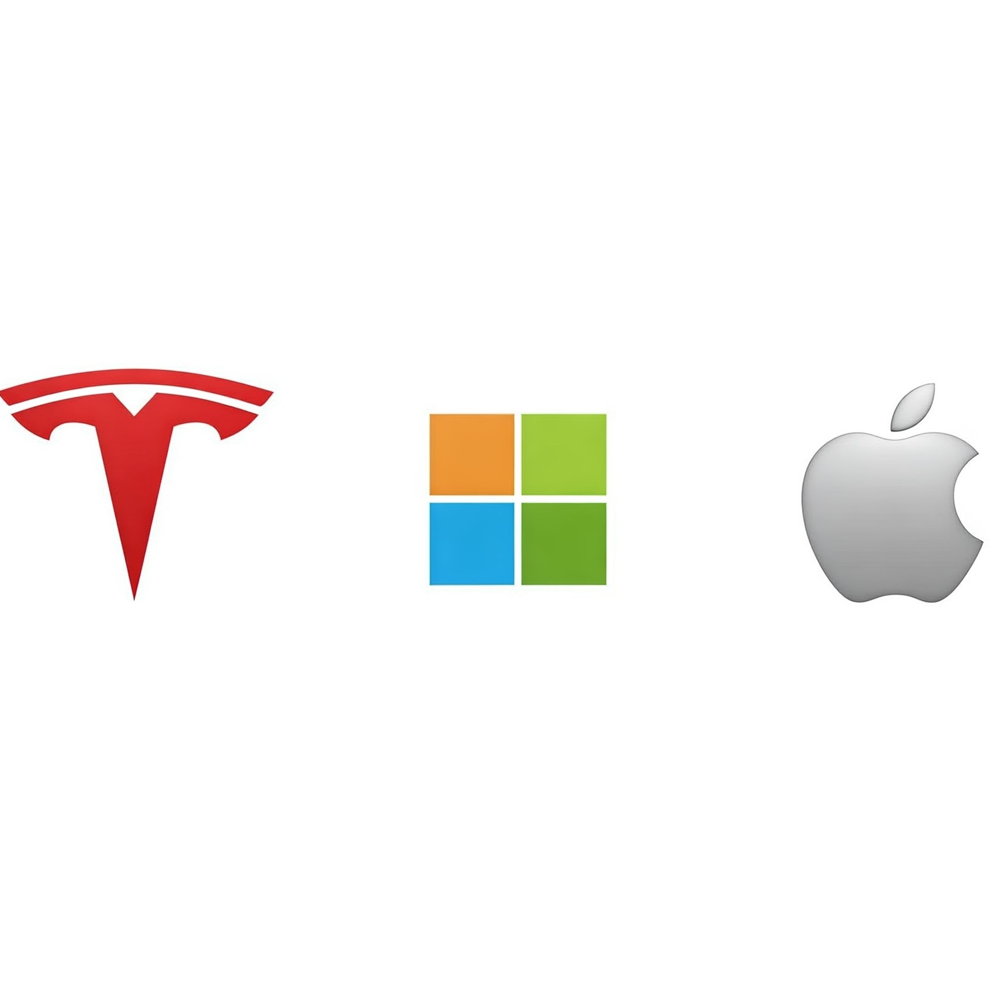

This Tableau dashboard provides a comprehensive analysis of British Airways customer reviews across various metrics, including overall rating, cabin staff service, entertainment, food and beverages, seat comfort, value for money, and ground service. The dashboard presents insights through interactive visualizations, including maps, time series, and bar charts. By focusing on key areas of improvement, British Airways can enhance customer satisfaction and maintain a competitive edge in the aviation industry.
This project involves analyzing various Data Analyst job postings collected from Google's search results in the United States using python. The dataset spans from November 2022, to January 2025, capturing trends in required skills and job availability. The top five technical skills in demand are SQL, Statistics, Excel, Python, and Tableau, while essential soft skills include communication, leadership, collaboration, attention to detail, and decision-making. LinkedIn emerges as the leading platform for job postings, followed by other sources. This analysis provides valuable insights into industry expectations and helps aspiring data analysts align their skill sets with market demands.
Designed an interactive Excel-based sales dashboard to transform raw sales data into actionable business insights. The project involved data collection, cleaning, and transformation, followed by advanced visualization techniques to identify key sales trends, customer preferences, and revenue patterns. Leveraged VLOOKUP, INDEX, pivot tables, and charts to analyze performance metrics effectively. Developed an intuitive dashboard with interactive filters, enabling seamless data-driven decision-making. This tool empowers businesses to optimize product offerings, track revenue growth, and enhance overall performance, ensuring strategic decision-making based on comprehensive sales analytics.
This project involves analyzing employee health and lifestyle data using SQL and Power BI to design a reward system that encourages a healthier workforce. The analysis identifies key absenteeism trends, recognizes healthy behaviors, and promotes non-smoking initiatives to enhance employee well-being. Insights from this project assist HR teams in optimizing workforce management strategies, reducing absentee rates, and improving overall productivity. Future recommendations include implementing wellness programs, optimizing work schedules, and introducing targeted incentives to foster a positive workplace culture. The interactive Power BI dashboard provides a data-driven approach to improving employee engagement and organizational efficiency.
I analyzed 12,000+ Uber app reviews using VADER and TextBlob for sentiment scoring. The sentiment distribution showed ~82% Positive, 9% Neutral, and 9% Negative feedback. The sentiment score distribution plot highlights that both VADER and TextBlob classify most reviews as positive, though their scoring methods differ slightly. Using TF-IDF vectorization, we trained Random Forest and XGBoost classifiers to predict sentiment. Random Forest achieved 89.96% accuracy, outperforming XGBoost (87.00%) with a 1.26x lift over baseline accuracy. These findings suggest strong positive sentiment towards Uber, with opportunities for improvement.
This interactive Sales Dashboard, built in Tableau, provides a comprehensive view of sales performance over time. Users can analyze total sales, profits, and quantity, with year-over-year comparisons and percentage growth. Key highlights include highest and lowest months, sales and profit breakdowns by subcategory, and trend analysis over time. The dashboard dynamically updates based on the selected year (2021-2024) and allows filtering by subcategory. Color-coded indicators differentiate profit and loss, helping businesses identify trends and optimize strategies. With a visually appealing design, this dashboard enables data-driven decision-making and performance tracking at a glance.
This Tableau dashboard offers an interactive visualization of Walmart's sales performance from February 2024 to February 2025. It provides key insights into total revenue, category-wise sales, payment method preferences, and top-performing products and cities. Users can explore sales trends through monthly and weekly patterns, enabling data-driven decision-making. With intuitive filters, users can analyze specific categories, products, or time periods, making this a powerful tool for business strategy and market analysis. The dashboard enhances data accessibility and ensures clear visual representation for stakeholders, demonstrating my expertise in data visualization and analytical storytelling.
This Tableau dashboard provides an in-depth analysis of traffic accidents using key visualizations. It highlights accident trends by month, day, and time, showing peak crash hours at 8 AM and 3-5 PM, with Fridays having the highest incidents. The dashboard breaks down injuries, fatal crashes, and damage expenses while analyzing contributing factors like failure to yield and improper lane usage. Most accidents occur in clear weather, daylight, and on dry roads. Additional insights include accident heatmaps, roadway conditions, and intersection-related crashes, offering valuable data-driven insights for traffic safety improvements.
I developed an interactive Tableau dashboard to analyze MotoGP statistics, focusing on rider performance, team achievements, race trends, and championship standings. The dashboard includes bar charts, line graphs, and pie charts to visualize key metrics like wins, teams, riders and other details. Users can apply filters by season, team, and rider for dynamic analysis. It also features navigation buttons and drill-down actions for seamless exploration. This project demonstrates my expertise in data visualization, dashboard design, and interactive analytics using Tableau.

This project analyzes 10-K filings of Microsoft, Tesla, and Apple from the year 2021 to 2024 using Python. A Year over Year (YoY) percentage change analysis identified key financial trends: Tesla showed extreme volatility, while Microsoft remained stable. In 2024, Apple and Tesla saw major asset declines, possibly indicating strategic shifts. The analysis utilized pandas for data processing and Matplotlib/Seaborn for visualization, showcasing expertise in financial data extraction and trend analysis. Results provide valuable insights into market positioning, stability, and growth patterns over time.
This project involves analyzing penguin species data collected from three islands in the Palmer Archipelago—Torgersen, Biscoe, and Dream. Using Python, the dataset is explored and visualized to uncover meaningful insights about penguin distribution, size variations, and correlations between physical features such as body mass, flipper length, and culmen measurements. Through statistical analysis and data visualization, this study provides a deeper understanding of species differences and habitat influences. The findings can contribute to ecological research and conservation efforts by highlighting key patterns in penguin morphology across different island environments.
This project involves building an Employee Performance Analysis Dashboard using Google BigQuery for data preprocessing and Google Looker Studio for visualization. The dataset consists of five files containing employee details, performance ratings, and HR metrics. Data cleaning includes handling null values, removing duplicates, and transforming key attributes like age groups, salary bins, and state names. SQL queries were used to join datasets, categorize information, and ensure data accuracy. The final dashboard provides insights into employee satisfaction, attrition trends, and performance evaluation, making it a valuable tool for HR analytics and decision-making.